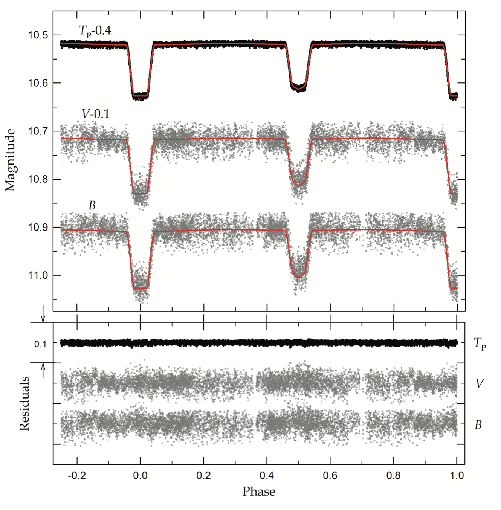
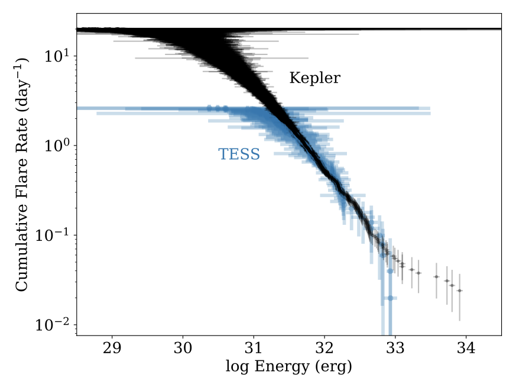

Welcome TESS followers to our fourth news bulletin! This week has been another big one with many papers featuring TESS data published on the archive, as such we have chosen to focus on just a few, but well done to everyone again this week!
-
The Pre-He White Dwarfs in Eclipsing Binaries. I. WASP 0131+28 (Lee et al., 2020) : TESS archival data in combination with that from WASP were used to construct detailed light curves and spectra for the post-mass transfer binary star WASP 0131+28, an EL CVn eclipsing binary in a thin disk. These data were used to study the properties of the extremely low mass white dwarfs. Spectra were used to derive an effective temperature of Teff = 10,000K, and radial velocities of 𝓋1sin𝒾 = 55 km. The TESS data were used to obtain accurate fundamental parameters. The mass of the secondary was derived as 0.2 M⊙, with a radius of 0.528 R⊙, Teff,2 of 11,186 K, and L2 of 3.9 L⊙. The parameters derived agree well with the evolutionary sequence for a He-core white dwarf of mass 0.203 M⊙.
-
10 Years of Stellar Activity for GJ 1243 (Davenport et al., 2020) : GJ 1243 is a flaring M4 dwarf and has been used for studying stellar flare and star spot activity. Data from the Kepler mission was used in the past to study this object, but now new TESS data has been utilized to obtain precise stellar activity characterization for this object over more than a decade. Within the TESS 2-minute cadenced data 133 flare events were detected. These events were used to determine that the flare activity is unchanged between the Kepler and TESS epochs. Star spots were also found to be consistent between the two data sets, indicating that this object does not show signs of solar-like activity cycles over 10 years.
-
PTFO 8-8695: Two Stars, Two Signals, No Planet (Bouma et al 2002) : This paper examines the signal from PTFO 8-8695 a star in the 7-10 million year old Orion-OB1 cluster. The star presents dips in its light curve similar to planetary transits, but previous evidence against a planet has been put forth. Using TESS and Gaia data the authors re-examine this object. TESS data indicate two photometric periods, one at 11.98 hrs thought to be caused by stellar rotation, the other at 10.76 hrs and possessing a signal similar to that for planetary transits. It is difficult to interpret the dips as planetary based since their phase is nearly 180° away from the phase of the originally reported dips. The paper goes on to considers PTFO 8-8695 as a pair of young and rapidly rotating M dwarfs, one of which is causing the “transient-dipper” behavior that has been seen in a newly emerging transient class of stars. The physical origin of the dips is still unknown, but likely due to circumstellar material.

Fig. 1: Taken from Lee et al., (2020): Light curves of WASP 0131+28 with fitted models. The black circles are from TESS, the gray from LOAO. The solid lines are synthetic curves from a simultaneous analysis of all curves. The lower plot shows the differences between the data and the models.

Fig. 2: Taken from Davenport et al., (2020): Cumulative flare frequency distribution for the 6107 flares observed with Kepler (black line - Davenport et al., 2014), and 133 flares from TESS (blue line). Flares are sorted large to small with regards to the energy of events per day.